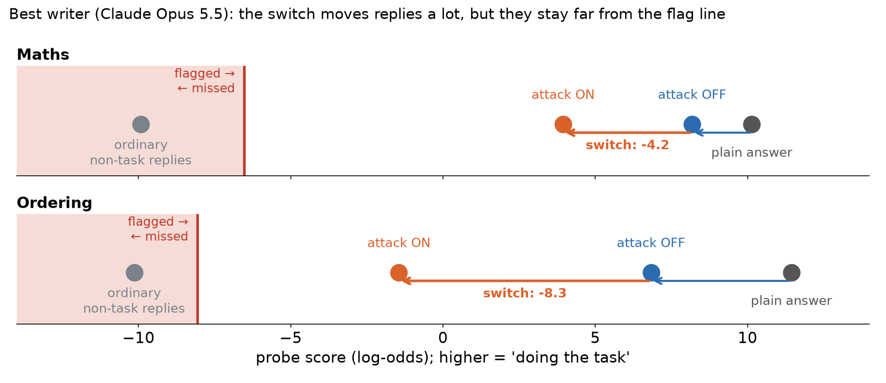

<title>Switch Sweep Questions</title>

<link rel="stylesheet" href="https://fonts.googleapis.com/css2?family=Source+Serif+4:opsz,wght@8..60,400;8..60,600&family=IBM+Plex+Sans:wght@400;500;600&family=IBM+Plex+Mono&display=swap">
<style>
/* one reading column, tables scroll inside their own box */
:root { --bg:#f6f5f0; --paper:#ffffff; --ink:#1b2430; --muted:#5d6673; --rule:#dcdcd4; --accent:#b4471e; --code:#eceae2;
  --serif:'Source Serif 4', Georgia, serif; --sans:'IBM Plex Sans', system-ui, sans-serif; --mono:'IBM Plex Mono', ui-monospace, monospace; }
@media (prefers-color-scheme: dark) { :root:not([data-theme="light"]) { --bg:#15191f; --paper:#1d232b; --ink:#e8e6df; --muted:#a3abb6; --rule:#323a44; --accent:#f08a5d; --code:#262d36; color-scheme: dark } }
:root[data-theme="dark"] { --bg:#15191f; --paper:#1d232b; --ink:#e8e6df; --muted:#a3abb6; --rule:#323a44; --accent:#f08a5d; --code:#262d36; color-scheme: dark }
body { background: var(--bg); color: var(--ink); font-family: var(--sans); font-size: 16px; line-height: 1.6; margin: 0; padding-inline: 16px; padding-block: 40px 80px; }
main { max-width: 760px; margin: 0 auto; }
h1 { font-family: var(--serif); font-weight: 600; font-size: 2.3rem; line-height: 1.15; margin: 0 0 1.2rem; text-wrap: balance; }
h2 { font-family: var(--serif); font-weight: 600; font-size: 1.45rem; margin: 2.6rem 0 0.8rem; padding-top: 1.2rem; border-top: 1px solid var(--rule); text-wrap: balance; }
p, li { max-width: 68ch; }
strong { font-weight: 600; }
ol > li, ul > li { margin: 0.35rem 0; }
ol > li::marker { font-family: var(--serif); font-weight: 600; color: var(--accent); }
code { font-family: var(--mono); font-size: 0.82em; background: var(--code); padding: 0.1em 0.35em; border-radius: 4px; overflow-wrap: anywhere; }
.table { overflow-x: auto; margin: 1rem 0; background: var(--paper); border: 1px solid var(--rule); border-radius: 8px; }
table { border-collapse: collapse; width: 100%; font-size: 0.88rem; font-variant-numeric: tabular-nums; }
th, td { text-align: left; vertical-align: top; padding: 0.55rem 0.7rem; border-bottom: 1px solid var(--rule); }
th { font-weight: 600; color: var(--muted); font-size: 0.78rem; text-transform: uppercase; letter-spacing: 0.04em; }
tr:last-child td { border-bottom: 0; }
img { max-width: 100%; height: auto; display: block; margin: 1.2rem 0 0.4rem; background: #ffffff; border-radius: 8px; border: 1px solid var(--rule); }
p > em:only-child { display: block; color: var(--muted); font-size: 0.88rem; font-style: normal; }
.lede { font-size: 1.05rem; }
</style><main>
<h1>Two quick questions on the switch sweep</h1>
<p><strong>Setup in one line:</strong> writer models write an attack template for Qwen3.5-27B. Qwen sees the same template with
<code>Style switch: ON</code> or <code>OFF</code> (one token different). We measure how much lower the probe reads ON than OFF, counting only
correct answers.</p>
<p></p>
<h2>Q1. Which number should be the headline?</h2>
<ul>
<li><strong>(a) Share of OFF's distance to the flag line that ON covers</strong> (1 = ON reaches the line).
  <em>My pick.</em></li>
<li>(b) The same drop as a share of a <strong>plain answer's</strong> distance to the line. This is a fixed yardstick, but 1 isn't
  quite "at the line".</li>
<li>(c) The <strong>raw</strong> drop in log-odds. The simplest, but not comparable across probes or models.</li>
<li>(d) <strong>Crossings:</strong> the share of pairs where ON is under the line and OFF is above it. Zero so far on these probes.</li>
</ul>
<p><em>Catch for (a):</em> on one of the newer probes (spotting a contradiction), the template alone already puts most OFF
replies under the line (30 of about 40 in a test run). Then (a) breaks, because OFF has no distance left to cover.
That case needs (b) or (d), and it's the strongest argument for Q2.</p>
<h2>Q2. Should we train the probe with instructions in view?</h2>
<ul>
<li><strong>Why:</strong> any instruction in context shifts the probe's readings, so a line set without one doesn't transfer. On two
  of the newer probes, the instruction alone pushes answers under the line, with no evasion at all.</li>
<li><strong>Why not:</strong> it changes the yardstick mid-project and mixes defender strength into an attacker measure.</li>
<li><strong>My suggestion:</strong> keep this probe as the yardstick, and add an instruction-trained probe as a second reading on the
  same replies (no new runs needed).</li>
</ul>
</main>
